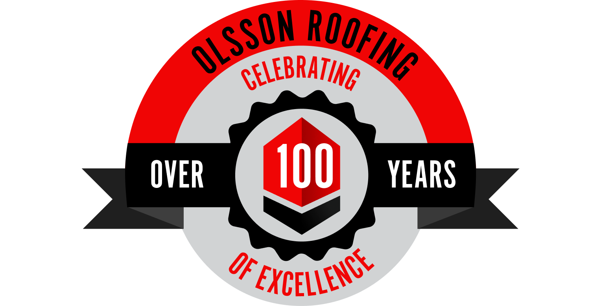

RE-1
≥ 100 lbs/ft
Membrane Pull-Off
Used for ES-1 / capability descriptions. Copper left-border anchors the technical content visually.
The visual and verbal language of Metal Edge — sharpened from the Olsson Roofing parent brand to support a best-in-class digital presence in architectural sheet metal.
Metal Edge is the architectural sheet metal division of Olsson Roofing, an ESOP-owned, 100-year-old commercial roofing contractor based in Aurora, Illinois. We design, fabricate, and install architectural metal systems — coping, fascia, wall panels, standing seam, ACM, IMP — for owners, GCs, and architects across the Midwest.
Most roofs don't fail at the membrane. They fail at the edge. So the edge is where everything else has to be right — the engineering, the fabrication, the tested certification, the install crew. The edge is our name because it's the part nobody else takes seriously enough.
Direct. Technical. Measured. Confident without bluster. We let proof do the persuading.
Metal Edge operates under the Olsson Roofing parent brand. Both marks ship in this package. Use the Metal Edge mark on any property focused on architectural metal capabilities; pair with the Olsson mark in the footer / about region.



Maintain clear space equal to the cap height of "M" on all sides. Never reproduce smaller than 24px wide on screen, 0.5" wide in print. Always use the supplied PNG / SVG; never re-typeset or recolor the wordmark.
The palette is anchored by Olsson Navy — confirmed in their custom stylesheet — and sharpened by introducing copper as the brand's distinctive accent. Copper nods to the metal materials Metal Edge installs (copper standing seam, patina facades) and breaks from the blue-and-red monotony that dominates B2B construction marketing.
Footer · deepest backgrounds
Olsson Navy. Dominant brand color, headings on light, dark surfaces.
Hover states, secondary surfaces
Charts, mid-depth panels
Links, info, illustrative
Inverse text accents
Soft backgrounds, footer text
Section tints
This is the move that elevates the brand. A material-anchored copper accent gives Metal Edge a distinctive identity in a category dominated by red-and-blue construction palettes — and references the copper standing seam systems they install.
Hover state of primary CTA
Primary CTAs, eyebrows, key stats, highlights
Selection backgrounds, soft accents
Badge backgrounds, hover row
Body muted text
Borders
Section alt background
24/7 emergency CTA
PPE / safety callouts
Submitted, complete
Caution / pending
Three families. Each with one job. Display gets the headlines. Body does the reading. Mono does the technical content — specs, codes, dimensions, calculations — so the engineering audience can scan it the way they scan a drawing set.
Fjalla One
A B C D E F G H I J K L M N O P Q R S T U V W X Y Z
0 1 2 3 4 5 6 7 8 9
Inter
The quick brown fox jumps over the lazy dog. 0123456789
IBM Plex Mono
RE-1 / RE-2 / RE-3 · 170 MPH · ANSI/SPRI ES-1
A lede in body that sets context for the reader. Lighter color, larger size, narrower measure. This is where the value proposition lives.
Body copy returns to base size and full color. Two- to three-paragraph blocks max — break long sections with sub-headings, never with whitespace alone.
FIG · 01 · ANCHOR · MONO CAPTION USED FOR TECHNICAL CALLOUTS
A 4px base scale, used consistently. Section padding clamps fluidly between mobile and desktop using clamp() on the container utilities — there is no desktop margin separate from a mobile margin.
--container-md · 768px — narrow content, contact forms, single-column reads--container-xl · 1200px — default page container--container-2xl · 1320px — wide hero / gallery layouts--container-prose · 68ch — body paragraph max-width (readability)Default is sharp. Buttons, badges, and form inputs use --radius-xs (2px) and --radius-sm (4px) — softer where it helps usability (cards, tools, modals) at --radius-md (6px). Pills and avatars use --radius-pill. Avoid heavy rounded-2xl shapes; they dilute the technical/industrial feel.
Used for ES-1 / capability descriptions. Copper left-border anchors the technical content visually.
Section headers always pair an eyebrow (copper, mono, all-caps) with a display headline. Together they signal both the type of content (technical) and the topic (specific).
We're talking to engineers and project managers. Cut the marketing language. Lead with proof. Numbers and certifications carry the persuasive load — adjectives don't.
Lead with proof, then implication.
"95% in-house. ES-1 certified. Tested to 170+ MPH."Start with adjectives that ask the reader to take your word.
"Industry-leading commitment to architectural excellence."Name the failure mode.
"Most roofs don't fail at the membrane. They fail at the edge."Generalize about quality.
"Quality you can count on."Specify the audience and the action.
"Talk to a Metal Expert" / "Build Your Submittal Package"Use generic CTA labels.
"Contact Us" / "Learn More"Fabricate · install · spec · profile · perimeter · uplift · test · cert · submittal · cleat · seam · coping · fascia · drip edge · tributary · membrane.
Solutions provider · world-class · best-in-class (in marketing copy) · cutting-edge · synergy · turnkey · holistic.
Three categories: Hero (drone shots of installed envelopes at golden hour), Detail (close-ups of seams, copings, fastening), and Crew (PPE-correct workers in action — never staged smiling at camera).
--radius-md rounded corners (6px) — never circular.--shadow-lg elevation. No overlay color shift..hero__bg::after in components.css).Tokens live in css/tokens.css as CSS custom properties. Reference them — never hardcode hex or px values in components.
:root {
/* Primary */
--navy-900: #152239; /* Olsson Navy — primary */
--navy-950: #0A1226;
--navy-700: #1F3A66;
/* Accent */
--copper-500: #C8732D; /* Primary CTA, eyebrows */
--copper-700: #8C4F1E;
--copper-100: #F7E2CD;
/* Neutrals */
--steel-500: #6B7785;
--steel-200: #D6DBE2;
--steel-050: #F6F8FB;
/* Type */
--font-display: "Fjalla One", Impact, sans-serif;
--font-body: "Inter", "Helvetica Neue", sans-serif;
--font-mono: "IBM Plex Mono", "SF Mono", monospace;
/* Spacing (4px base) */
--space-4: 1rem;
--space-8: 2rem;
--space-16: 4rem;
--space-32: 8rem;
}css/tokens.css — color, type, space, radii, shadow, motion, z-index.css/base.css — reset, document defaults, typographic primitives, helpers.css/layout.css — containers, sections, grids, splits, utilities.css/components.css — buttons, cards, nav, hero, forms, badges, stats, footer.css/branding-guide.css — page-only styles for this brand guide.Color tokens: --family-shade (e.g. --navy-900, --copper-500). 50/100/300/500/700/900/950 ladder following Tailwind convention so future migration is friction-free.
Spacing tokens: --space-N where N is the multiplier on a 4px base (so --space-8 = 32px).
Aliases: Semantic aliases (--color-bg, --color-text, --color-border) reference the underlying scale tokens — change theme by remapping aliases without touching components.
The strategic and research-backed decisions behind every structural and visual choice on the Metal Edge landing page.
Metal Edge's portfolio is dominated by facade, cladding, and enclosure work — ACM panels, column covers, wall systems, and specialty metals — yet the original page led with ES-1 roofing compliance messaging. This created a category mismatch: prospects arriving from architect and GC referrals saw a roofing page, not a fabrication and installation specialist.
The redesign repositions Metal Edge as an architectural sheet metal fabricator and installer. Roofing remains in the capabilities carousel but is no longer the hero narrative. This mirrors how high-performing B2B industrial sites frame specialist divisions: lead with the broadest proof of craft, then depth-sell into specific systems.
"From perimeter coping to multi-dimensional LED-integrated walls — nine systems, one fabricator."
"ES-1 Certified Coping · Wind Uplift Tested · Metal That Holds Your Membrane Down"
The section sequence follows a trust ladder — each section earns the next ask. Visitors who arrive skeptical (architects vetting a sub, GCs comparing bids) need proof before they'll engage a form.
| Section | Visitor Job | Design Intent |
|---|---|---|
| Hero | Answer "who is this for?" | Full-bleed video establishes craft scale; four key stats anchor credibility immediately below the fold |
| Trust Strip | Social proof before scroll | Known client logos (Northwestern Medicine, Colliers, Arhaus) signal that serious buyers already rely on Metal Edge |
| Lifecycle / Advantage | Understand the differentiation | Three pillars (In-House Fab → Direct Install → Lifecycle Service) explain the vertical integration model competitors can't match |
| Capabilities Carousel | Confirm capability coverage | Full-bleed immersive images prevent the "brochure grid" feel common in competitors; autoplay with manual override respects both passive and active browsing modes |
| Project Gallery | Validate quality of output | Real project photography, not stock. Category badges (Facades, Roofing, Custom) let specifiers self-filter |
| Featured Project (Arhaus) | Hear it from a peer | Video testimonial from Tom Bruick is more persuasive than any written copy. Named crew members (Whippo, Rangel) signal accountability and pride |
| Safety | Remove a hidden objection | GCs and owners carry liability risk for subcontractor incidents. OSHA partnership and named safety leadership address this before it becomes a deselection reason |
| E-Tools | Engage active specifiers | Submittal Wizard and Color Visualizer create reasons to return and signals to the sales team that a prospect is active |
| About / ESOP | Understand who they're hiring | Employee ownership is a genuine differentiator — ESOP-owned companies statistically outperform on retention and quality consistency |
| Contact / CTA | Convert | Copper section color signals a decisive moment; form is short enough to complete in 90 seconds; Interest checkboxes pre-qualify the lead for routing |
Static hero images are the industry default for specialty contractors. A looped, muted video background communicates scale and craft at a glance — the kind of motion that a photo of a finished panel wall cannot. The video is set to autoplay loop muted playsinline with a Cloudinary-hosted poster frame so above-the-fold paint is never blocked by video load time.
Opacity & blend mode: The video overlay uses opacity: 0.55; mix-blend-mode: luminosity — this desaturates the footage slightly so it reads as a textural field rather than a competing image, and ensures the dark navy gradient above it retains enough contrast for WCAG AA text compliance.
Stats below the fold line: Four KPIs (95% in-house, 200+ years combined experience, 2M sq ft IMP, 200 ft max height) appear immediately below the hero CTA. These are the four questions a GC is silently asking within the first 10 seconds: Can they fabricate it? Do they have the experience? What scale have they handled? How high will they go?
The original design used a capability tile grid — small cards with icons, matching the pattern used by virtually every regional sheet metal and roofing contractor website. This approach has two problems:
The full-bleed carousel solves both: each slide fills the viewport width, making the photography the product. The autoplay (5s intervals) gives passive visitors a motion signal that the site has depth; the numbered nav strip lets active specifiers jump directly to the system they're evaluating.
Autoplay behavior: Autoplay permanently stops on first user interaction (click or swipe). This follows accessibility best practice — WCAG 2.1 SC 2.2.2 requires users to be able to pause moving content — and also reflects the UX truth that a user who clicks is indicating intent, and interrupting that intent with continued motion is disorienting.
The palette is deliberately narrow: navy-900 (#152239) as the primary surface, copper-500 (#C8732D) as the accent, and a set of steel grays for supporting text and borders.
Navy: Dark navy is the conventional color language of precision manufacturing, engineering firms, and commercial building products. It reads as serious, durable, and technically competent — the same category signals used by companies like Nucor, ATAS International, and Metal Sales Manufacturing.
Copper: Copper is the material that distinguishes Metal Edge's premium custom work — literal copper fascia, Cor-Ten accents, specialty patina finishes. Using it as the brand accent anchors the digital identity to the physical craft. It also provides the warmth contrast that prevents the navy palette from reading as cold or generic.
#0E1829#152239#C8732D#EEF0F3Fjalla One (display) is a compressed grotesque — the same structural weight as typefaces used in industrial signage and architectural drawings. It reads at a glance from a distance, performs well on dark backgrounds, and has no serif finish that would soften or feminize the brand.
IBM Plex Mono (monospace) is used for spec labels, eyebrows, stat labels, and system IDs. Its use in a commercial context signals technical precision and references the coding / fabrication spec sheet aesthetic — communicating that Metal Edge works from engineered tolerances, not rough estimates.
Inter (body) is the highest-performing variable sans-serif for on-screen reading at small sizes. At 400–600 weight, it sustains legibility across the dark section backgrounds that make up the majority of the page.
The following patterns are near-universal in the regional sheet metal and commercial roofing contractor category, and deliberately avoided or subverted in this design:
| Industry Pattern | Why It's Common | Metal Edge Approach |
|---|---|---|
| Stock photo hero (generic worker, sky, tools) | Low cost, fast to launch | Real Vimeo footage from active Metal Edge jobsites |
| Service tile grid with icon + 2-line description | Easy to update, familiar template | Full-bleed carousel with project photography and extended per-system copy |
| Generic "Get a Free Quote" CTA | Low-friction, familiar | "Get a callback within one business hour" — a specific, time-bounded promise |
| Blue or red brand palette | Trust and urgency associations from other industries applied wholesale | Navy + copper tied directly to the physical materials Metal Edge works with |
| No safety content | Safety is assumed; rarely positioned as a differentiator | Dedicated safety section with named OSHA partnership and annual Safetyfest — removes a hidden procurement objection |
| No interactive tools | Requires ongoing maintenance | Submittal Wizard and Kynar Color Visualizer create qualified engagement signals for the sales team |
| Employee count or years in business as primary trust signal | Easy to produce, universally available | ESOP ownership framed as quality alignment ("every crew member is a stakeholder") — a structural reason to believe output quality, not just tenure |
All production images are hosted on Cloudinary (cloud: dsbllwpbh, folder metal-edge/) and served with the transformation string f_auto,q_auto. This means:
Partner logos are served from metal-edge/partnerlogos/. Project images from metal-edge/projects-*. The full upload map is maintained in cloudinary-map.json at the project root.
The E-Tools section — Submittal Wizard, Kynar Color Visualizer, and BIM & CAD Library — is the most unusual structural choice on the page relative to industry norms. Most regional sheet metal and commercial roofing contractors do not publish specification tools publicly. Understanding why Metal Edge does is critical to understanding the page's conversion strategy.
Architects and GCs who work with specialty metal contractors face a recurring friction: the administrative overhead of specifying custom metal is disproportionately high relative to the cost of the work. A submittal package for a coping system requires cross-referencing the membrane type, edge profile, clip spacing, wind zone, and finish — typically a back-and-forth process that can take days and involves multiple phone calls or email threads with the fabricator's inside sales team.
This friction is an invisible conversion barrier. If the cost of getting a quote involves significant administrative labor, some specifiers will default to a competitor they already have a working relationship with, even if Metal Edge is the better fabricator for the job. The E-Tools section eliminates that barrier.
The Submittal Wizard is a guided 4-step form that walks a specifier through the decisions required to generate a compliant submittal package:
Why this matters strategically: The Wizard compresses what is typically a multi-day process into approximately three minutes. A specifier who completes the wizard has self-qualified — they know what system they need and what quantity. That data arrives with the contact form submission, giving Metal Edge's project managers a warm, pre-specified lead rather than a cold inquiry that requires an intake call before any technical conversation can begin.
The "~3 min" badge on the tool header is intentional copy — it names the cost of engagement explicitly and makes it feel negligible. This is a standard conversion technique for tools that require some user effort: naming the time commitment reduces the perceived friction of starting.
The Color Visualizer is an interactive SVG facade rendering with 12 Kynar 500 finish options (PAC-CLAD palette). Users select which building element to paint — Wall Panel, Coping, or Columns — then click a finish to see it applied in real time. The underlying SVG elements (#metalEdgeBuilding, #metalEdgeCoping, #metalEdgeColumn1/2) are updated directly via JavaScript without any network request.
Kynar 500 specifically: Kynar 500 is the industry-standard fluoropolymer finish for architectural metal — specified by architects on virtually every commercial facade project that involves painted metal. The tool speaks that language directly, using PAC-CLAD finish codes that appear verbatim on architectural specification sheets. This signals to an architect or specifications writer that Metal Edge understands how their workflow actually operates.
Why an in-page SVG, not a photo-based renderer: Photo-realistic color tools require a library of photography shot under controlled lighting for every finish combination — expensive and difficult to maintain. An SVG-based schematic renderer is indefinitely maintainable: adding a new finish is a one-line JavaScript array entry. The schematic also avoids the uncanny valley problem of photo-rendered previews where the lighting never quite matches the prospect's mental image of their building.
The "Save This Configuration" CTA at the bottom of the visualizer panel routes to the contact form. A user who has spent time configuring a color scheme has already mentally committed to the product — this is the highest-intent moment on the page to make the next ask.
The BIM & CAD Library is a searchable, filterable index of downloadable files in Revit (.RVT), AutoCAD (.DWG), and specification PDF formats. Files are organized by system category — Coping, Fascia, ACM, IMP, Standing Seam — with a live search that filters by system name, profile, or size.
Why BIM files matter for conversion: When an architect downloads a Revit family for a specific coping profile, that object enters their project model. Switching to a different fabricator at that point requires re-specifying the detail and potentially redrawing wall sections — a real labor cost. BIM files create switching costs that favor Metal Edge long before a bid is ever submitted. This is the same strategy used by major manufacturers (Metl-Span, ATAS, Kingspan) to maintain specification position: get into the model early, stay in the model.
RVT + DWG + PDF: The three formats cover the three primary specifier workflows. Revit families (.RVT) are used by architects working in BIM environments. AutoCAD (.DWG) is used by structural and MEP engineers who need to coordinate against the envelope. PDFs serve contractors, estimators, and submittal reviewers who need a printed spec without opening a CAD application.
Taken together, the three tools accomplish something no amount of marketing copy can: they demonstrate competence through capability. A fabricator who publishes a working submittal wizard, a Kynar palette visualizer, and a searchable BIM library is making a credible claim that they understand how architects and GCs actually work — not just that they want their business.
Each tool also creates a natural hand-off point to the sales team. The Wizard's download flow, the Visualizer's "Save This Configuration" CTA, and the BIM Library's download events all represent measurable engagement signals that, in a connected CRM environment, would trigger outreach from a project manager at the moment of highest intent.
"This company understands my workflow, has prepared for my questions, and has invested in making it easy to specify their product. They are ready to work at my level."
"Call us for a quote." — Requires the specifier to invest time before receiving any value. Favors incumbents with established relationships over Metal Edge.
muted is required for autoplay. The video is decorative (no information is conveyed exclusively through it), so no audio track or transcript is required at this layer.<track kind="captions"> element pointing to assets/captions/arhaus.vtt — verbatim captions from the Tom Bruick interview.aria-label attributes. Nav buttons use aria-current="true" on the active slide.section--dark, section--deep, and section--copper surfaces explicitly inherits color: var(--color-text-inverse) via extended selector lists in base.css. This was required because the base h1–h6 rule sets color: var(--color-text) with higher effective specificity than inherited section color.alt attribute. Logos are presented as grayscale by default to reduce visual competition with primary content; color is revealed on hover as a non-essential enhancement.